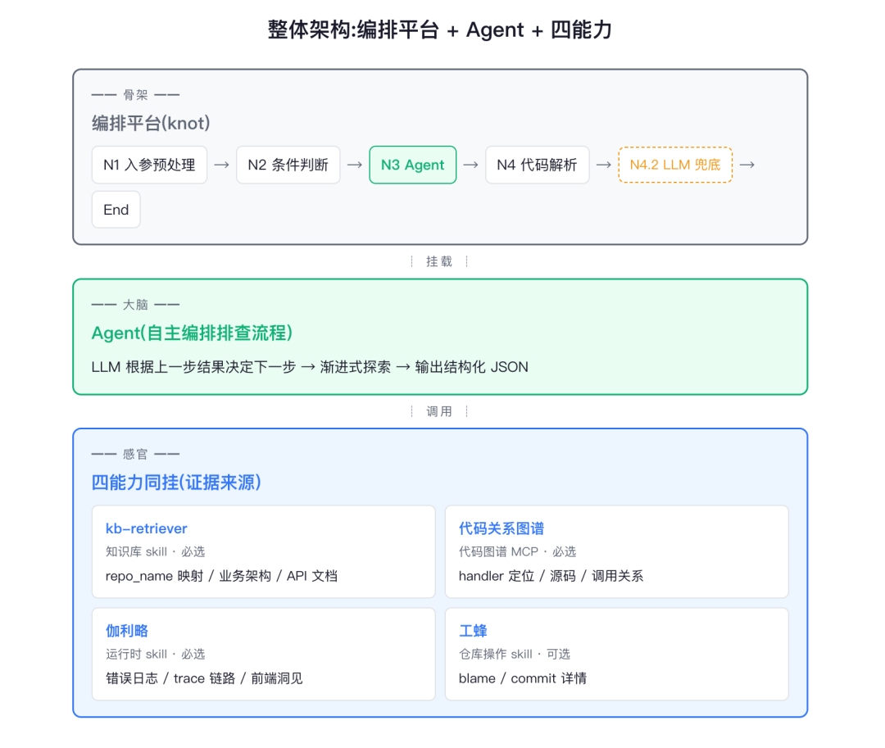
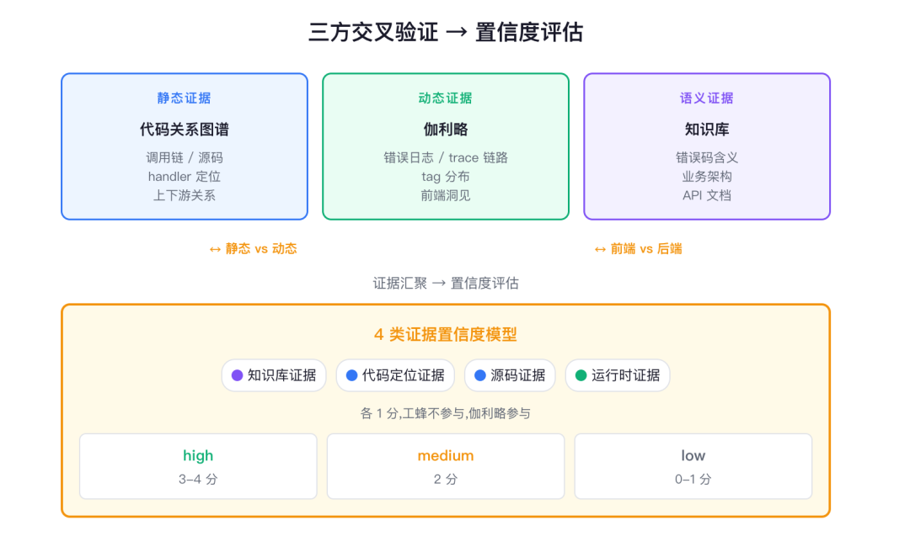
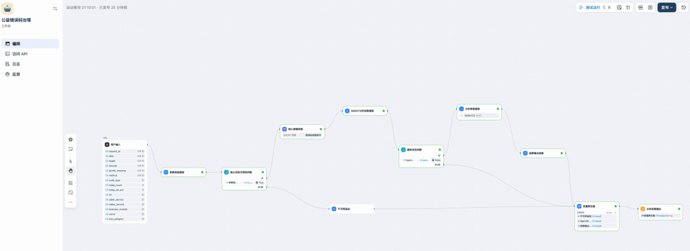
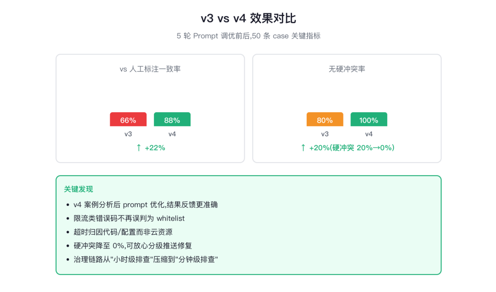
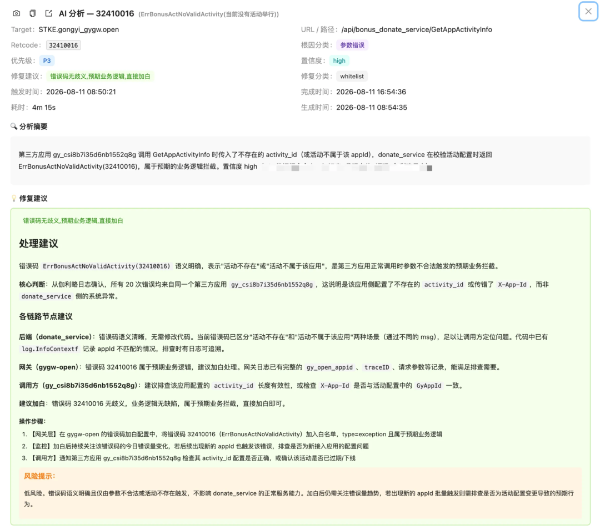
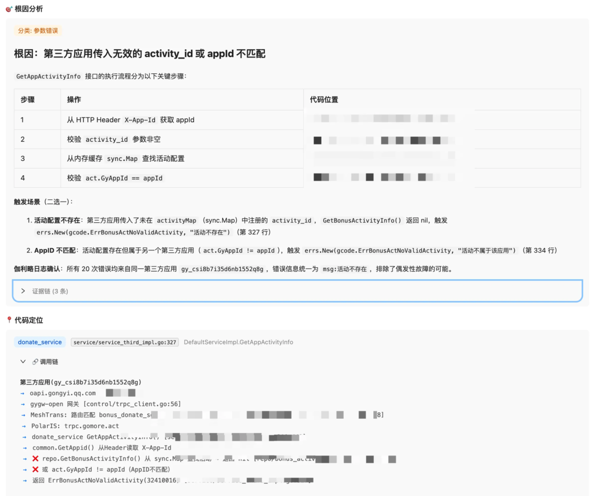
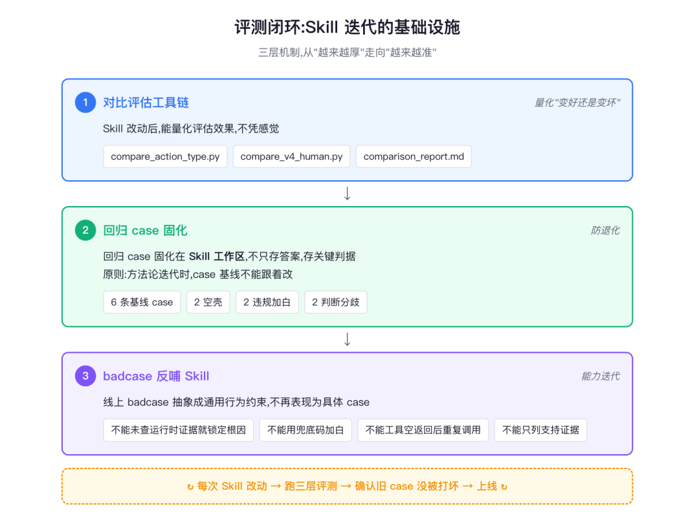

错误码排查从 3～8 小时到分钟级，Agent怎么做到的？
来源：微信公众号 归档日期：2026-09-24 抓取状态：成功 原文字符：8062｜配图：10 张
摘要速览
- 腾讯技术工程实践：SRE 人工排查一个错误码需 3～8 小时，用单 Agent 挂载知识库、代码关系图谱、可观测平台、代码托管平台四类能力后，压到分钟级出根因与修复建议。
- 50 条 case 评测：action_type 与人工标注一致率 66%→88%，硬冲突率 20%→0%，需人工介入率 34%→12%。
- 选型单 Agent 而非多 Agent：错误码排查是"查到 handler 再追上游"的渐进式探索，单 Agent 上下文完整便于交叉验证；流程规则沉淀到一个 Skill 控制 Prompt 复杂度。
- 可信结论靠交叉验证：静态代码说明"怎么写"，trace 才说明"现场怎么跑"；置信度模型给知识库/代码定位/源码/运行时证据各 1 分，3～4 分 high、2 分 medium、含义补不全最高 medium。
- 稳定输出靠工作流 11 节点双路径：快路径四层容错 JSON 解析，失败走慢路径 LLM 提取 9 字段（字段独立、最多重试 3 次）；输出前执行 17 项检查。
- 迭代方法是对比驱动而非堆规则：50 case 做 5 轮 Prompt 调优（先排除再判断加白、修复建议划边界），badcase 反哺 Skill + 回归 case 固化，防 Skill"越来越厚、越来越慢"。
核心内容
治理链路从"告警搬运"变"修复建议审核"：Agent 产出带证据和代码位置的结论，按置信度分级——high 标"建议采纳"、medium 标"参考需确认"、low 仅归档，SRE 审核后推送，开发收到的不再是"这个错误码今天出现 X 次"而是可执行结论。
四类能力分工明确并带使用约束：知识库给仓库映射与业务上下文（repo_name 必须从知识库取）、代码图谱定位 handler 与调用链（业务仓库→@group 多仓库→代码搜索兜底，调用预算 15 次是截断与超时的折中）、可观测平台给日志与 trace（today_count 与 today_ret_pct 均非 0 时必须查、按告警日期而非近 24h）、代码托管平台给 blame 与 commit（不计置信度分——知道谁改的推不出根因）。
五步排查（补语义→建上下文→定位调用链→采运行时→补变更）非机械串行，每条 evidence 标注来源便于回查。工程细节上，11 节点工作流的坑常在节点配置（分支输出变量统一、新增字段同步三处、批处理注意平台限频）；一个真实 case 因 Markdown 管道符写成 | 触发 JSON Invalid escape 导致四层解析全挂，由此定下输出契约 17 项检查。
效果与协作：近一月日均处理数百条去重告警，high 置信度约 90%、失败率约 1%（主因 API 限频），链路从"小时级排查+天级修复"缩到"分钟级排查+0.5～2 天修复"；开发从已有分析继续验证，减少重复排查。评测闭环五维度（结果/过程完整性/工具可靠性/证据边界/效率稳定性），区分"有证据地判断正确"和"碰巧说对"。
可执行启发
- 渐进式排查类任务用单 Agent 挂全部能力 + 一个 Skill 沉淀规则，比拆多 Agent 更保上下文；相对独立可并行的子任务才值得多 Agent。
- 结构化输出别只靠一次 json.loads：配"快路径多层容错解析 + 慢路径 LLM 修复提取"双保险，且字段独立解析、避免一字段空连坐清空全部。
- 从 badcase 提炼通用约束并固化回归 case，规则迭代不随意改基线；评测既看终判也看过程检查点。
- 修复建议划边界：只改实际触发问题的入口、优先复用已有集中处理、新增错误码/抽象层先算 ROI；多因场景选最快止血动作，其余放 steps。
我的想法
（待补充）
原文沉淀
目录
- 作者：careylu，AI Agent开发工程师
- 一、从告警搬运到修复建议审核
- 二、为什么选择单 Agent 挂载四类能力
- 2.1 选型：保留渐进式探索的完整上下文
- 2.2 四类能力各自提供什么证据
- 2.3 智能体编排平台的工作流与 Agent 的分工
- 三、证据如何形成可信的排查结论
- 3.1 五步排查，不是机械串行
- 补全错误码语义。
- 建立业务上下文。
- 定位代码与调用链。
- 采集运行时证据。
- 补充最近变更。
- 3.2 交叉验证：代码怎么写，不等于现场怎么跑
- 3.3 置信度模型
- 四、11 个节点，让排查结果稳定输出
- 4.1 快路径解析，慢路径兜底
- 4.2 输出契约与解析兜底配合
- 4.3 三个值得提前检查的工程细节
- 五、用真实 case 调优，而不是不断堆规则
- 5.1 先排除，再判断是否加白
- 5.2 修复建议要有边界
- 5.3 两个代表性案例
- 六、效果：从转述现象到交付可执行结论
- 6.1 50 条 case 的版本对比
- 6.2 上线运行与协作变化
- 七、用评测闭环支撑持续迭代
- 7.1 把排查过程拆成检查点
- 7.2 已落地的三层机制
- 结语：可复用的是方法，不是整套规则

作者：careylu，AI Agent开发工程师
SRE 每天面对去重后数百个错误码告警：retcode 含义不清、调用链难追、运行时证据分散。人工排查一个错误码需要 3～8 小时不等，大量时间花在跨系统检索和上下文拼凑上，推给开发后往往还要再查一遍。
我们基于智能体编排平台搭建了错误码治理 Agent：将知识库、代码关系图谱、可观测平台数据和代码托管平台四类能力挂载到同一个 Agent，由它自主编排排查流程，分钟级产出根因分析和修复建议。在 50 条 case 对比中，优化后的 action_type 与人工标注一致率从 66% 提升到 88%，硬冲突率从 20% 降至 0%。
这篇文章重点分享三个实践：如何组织多源证据、如何让长链路排查稳定产出，以及如何用案例和回归评测持续迭代 Skill。
一、从告警搬运到修复建议审核
过去的治理链路是：告警推送给 SRE → 查文档、代码和日志 → 转给开发 → 开发再次排查 → 修复。难点不只是告警多，而是证据分散，单独查到其中一部分仍然无法确认根因。
| 排查瓶颈 | 需要补齐的信息 |
|---|---|
| 错误码只是一个数字 | 错误码含义、业务规则、服务职责 |
| 不知道在哪个仓库抛出 | 仓库映射、handler、上下游调用关系 |
| 静态代码不能说明现场情况 | 错误日志、trace、实际耗时与链路 |
| 只能转述现象 | 代码位置、根因分类、可执行的修复动作 |
我们的目标是让 Agent 完成根因分析和修复建议，SRE 审核后再推送：high 置信度标注“建议采纳”，medium 标注“参考，需确认”，low 仅归档，P0/P1 例外推送。开发收到的不再只是“这个错误码今天出现了 X 次”，而是带证据和代码位置的排查结论。
让 SRE 从“告警搬运工”升级为“修复建议审核员”。
二、为什么选择单 Agent 挂载四类能力
2.1 选型：保留渐进式探索的完整上下文
我们对比了两种方案：
| 维度 | 多 Agent 协作 | 单 Agent 挂载全部能力 |
|---|---|---|
| 结构 | 知识库、代码、运行时 Agent 分工，汇总 Agent 收敛 | 一个 Agent 自主调用四类能力 |
| 优势 | 职责清晰，适合相对独立的子任务 | 上下文完整，便于交叉验证 |
| 代价 | 通信和编排复杂，上下文传递易丢失 | Prompt 复杂，需要明确能力边界 |
| 适用任务 | 子任务可独立执行、并行验证 | 根据上一步结果决定下一步的渐进式探索 |
错误码排查更接近后者：查到 handler 后追上游，日志显示限流后再确认错误码定义。我们最终选择单 Agent，并将完整排查流程、工具使用规则和输出约束沉淀到一个 Skill，控制 Prompt 复杂度。
过程中也尝试过按排查路径拆分多个 Skill，但切换依赖 Agent 自觉，通用规则又需要重复维护，因此没有继续采用。动态子任务编排同样会增加状态管理成本，不是本次方案的重点。
2.2 四类能力各自提供什么证据
| 能力 | 证据职责 | 关键使用约束 |
|---|---|---|
| 知识库 kb-retriever（知识库检索 skill） | 仓库映射、业务架构、API 文档、历史经验 | repo_name 必须从知识库获取，不能直接用 service_name 试探仓库 |
| 代码关系图谱 | handler 定位、源码、上下游调用关系 | 仓库只填别名，禁止枚举所有仓库或传不支持的参数 |
| 可观测平台 | 错误日志、trace、前端洞见 | 按告警日期查询；满足触发条件时，日志和 trace 都要查 |
| 代码托管平台 | 行级 blame、commit 详情、代码搜索兜底 | 定位到 file_path:line 后按需查询变更；失败跳过，不参与置信度计算 |
代码图谱的检索路径固定为：业务仓库查询 → 未命中时使用 @<groupName> 多仓库模式 → 代码托管平台代码搜索兜底，避免逐仓库盲试。图谱调用预算从 5 次调整到 15 次：5 次容易截断调用链分析，30 次又容易超时，15 次是当前验证后的折中。
可观测平台在 today_count 和 today_ret_pct 均不为 0 时必须调用，时间窗口使用 error_context.date，而不是默认最近 24 小时；查询失败跳过，不参与重试。代码托管平台的变更查询则是可选项，未调用不要求额外说明。
2.3 智能体编排平台的工作流与 Agent 的分工
智能体编排平台的工作流负责入参预处理、条件判断、Agent 调用、结果解析和输出组装；Agent 负责自主排查并输出 JSON。Skill 承载排查流程与规则，业务侧提供知识、代码和运行时数据。
工作流是“骨架”，Agent 是“大脑”，四类能力是“感官”。

图1：错误码治理整体架构
三、证据如何形成可信的排查结论
3.1 五步排查，不是机械串行
Agent 收到 error_context 后，以五步流程组织排查，并根据已有结果决定具体查询路径：
补全错误码语义。
输入的 gcode_meaning 为空时，至少用两种方式复核，包括文档、代码定义或运行时日志；查不到则填 ErrUnknown_<retcode>。
建立业务上下文。
检索前后端仓库映射、业务架构、API 文档和历史经验，为代码定位提供起点。
定位代码与调用链。
定位 handler，拉取源码，追查上下游和错误码定义，遵守上一节的检索路径与调用预算。
采集运行时证据。
查询日志及 tag 分布，检索 trace 和完整链路，必要时补充前端洞见。
补充最近变更。
已定位到具体代码行时，按需查询 blame 和 commit，填充 recent_change。
每条 evidence 标明来源，如“知识库命中”“代码关系图谱 context”“可观测平台 log”“可观测平台 trace”“代码托管平台 blame”，方便人工回查。
3.2 交叉验证：代码怎么写，不等于现场怎么跑
假设静态代码显示 A 调用 B，只有结合 trace 才能区分：是 A 内部多次串行调用导致累积超时，还是请求到达 B 后由 B 报错。两种情况对应的责任点和修复动作完全不同。
前后端也需要相互验证：后端错误要检查前端调用方式和错误处理，前端错误要核对后端返回结构。前端源码没有获取到，就明确说明，不能凭后端代码推断；入口函数将错误处理委托给其他函数时，还要继续追查，不能停在入口。

图2：多源证据交叉验证
3.3 置信度模型
当前模型将知识库、代码定位、实际源码、运行时证据各计 1 分：3～4 分为 high，2 分为 medium，0～1 分为 low。若错误码含义无法补全，置信度最高为 medium。
代码托管平台变更信息不计分：知道谁改了代码，不能直接推出根因；可观测平台的日志和 trace 则用于验证运行时情况，参与评分。分级结果用于第一节的人机协作与推送策略。
四、11 个节点，让排查结果稳定输出
4.1 快路径解析，慢路径兜底
工作流包含 11 个节点，含 Start 和 End，通过条件分支处理无效输入、正常解析和解析失败三种情况，不是所有节点依次串行执行。

图3：双路径工作流编排画布
| 节点 | 职责 |
|---|---|
| Start | 接收 15 个输入字段，gcode_meaning 非必填 |
| N1 | 校验核心字段、提取 service_name、归一化 retcode |
| N2 | 判断输入有效性，分别进入 N3 或 N2.1 |
| N2.1 | 组装 failed 响应 |
| N3 | Agent 自主排查，输出 JSON 文本 |
| N4 | 快路径：四层容错 JSON 解析 |
| N4-true | 将 extract_result 透传为 result |
| N4.1 | 根据 parse_success 进入透传或慢路径 |
| N4.2 | 慢路径：LLM 提取 9 个字段 |
| N4.3 | 使用 safe_parse 解析 5 个 Object 字符串并组装结果 |
| End | 汇聚三条入边，原样输出 result |
Agent 输出可能包含 Markdown 代码块、前后说明或缺失字段，因此不能只依赖一次 json.loads。快路径依次尝试直接解析、提取代码块、寻找最后一个对象边界、遍历对象起点；任一成功即可输出。
快路径失败后，慢路径由 LLM 修复格式并独立提取 9 个字段。非空输入却全部得到默认值时，最多重试 3 次；只有空输入或重试后仍无法提取任何字段，才输出全量默认值。关键是字段独立：code_location 为空，不能连带将已有的 confidence 和 analysis_summary 清空。
4.2 输出契约与解析兜底配合
一个真实 case 曾因将 Markdown 管道符写成 |，触发 JSON 的 Invalid escape，导致四层解析全部失败。问题在 JSON 内部，仅清理前后缀无法解决。
因此，Skill 除了要求双引号、换行正确转义，还明确管道符直接写 |、反引号不转义、代码块带语言标签，并在输出前执行 17 项检查：JSON 格式 6 项、Markdown 内容 4 项、字段完整性 7 项。
输出契约负责减少格式错误，双路径负责解析失败后的兜底，两者各管一端。
4.3 三个值得提前检查的工程细节
- 分支输出变量要统一。
N4 输出 extract_result，End 期望 result，因此需要 N4-true 透传；否则正常解析的支路也可能输出为空。
- 新增字段要同步三处。
LLM 提取字段、Python 入口形参、工作流节点参数映射缺一不可。出现缺少必填参数的报错时，先查映射配置，不要只改脚本。
- 批处理要考虑平台限频。
批量评测可能触发分钟级配额，日常峰值可能触发日级配额。调用脚本需要限频感知与等待重试，更高吞吐需求再与平台协调。
工作流的坑不一定在代码里，也可能在节点配置里。
五、用真实 case 调优，而不是不断堆规则
基于优化前 v3 与优化后 v4 的 50 条 case 对比，我们进行了 5 轮 Prompt 调优。除前文的检索路径、调用预算和输出契约外，改动重点是判定顺序与修复建议边界。
5.1 先排除，再判断是否加白
“加白”指将错误码加入告警豁免清单，不再触发告警推送。
v3 将“加白条件”和“不能加白场景”并列陈述，Agent 容易先匹配更宽松的加白条件。v4 改为显式三步：先检查禁止加白场景，全部排除后再判断加白条件，最后区分 whitelist 与 whitelist_and_refine。
关键规则包括：限流类错误优先判为 rate_limit_internal/external；兜底通用码先 fix_code 细化，不能直接 whitelist_and_refine；超时优先排查代码和配置，只有云资源本身故障且代码配置无法优化时，才选择 handle_cloud_resource。若语义明确属于预期业务拦截，则结合业务规则判断，不能只看 code_type。
5.2 修复建议要有边界
Agent 容易倾向“多给建议”：给每个调用点加 if-else、修改不会触发问题的入口、为低频偶发问题扩展错误码体系。我们补充三条原则：只修改实际触发问题的入口；优先复用已有集中处理表或中间件；新增错误码和抽象层前先评估用户处理差异与 ROI。
多因场景中，action_type 选择最快止血的动作，其他优化放入 steps，避免把短期修复与长期改造混为一谈。
5.3 两个代表性案例
| 案例 | v3 的判断 | v4 的调整 | 关键证据与规则 |
|---|---|---|---|
| 限流错误码 30110013 | whitelist | rate_limit_internal | 日志显示限流计数器触发；将限流判断放在加白判断之前，即使 code_type=exception 也不能跳过 |
| Redis／网络相关超时 | handle_cloud_resource | fix_code 或 fix_config | trace 显示 Redis 单次调用不慢，handler 内部多次串行调用累积超时；优先排查代码瓶颈和超时配置 |
这类调优不是针对某条错误码记答案，而是从错误路径中提炼规则，让下一条同类问题也能受益。
Skill 工程设计不是写更多提示词，而是对比驱动、案例驱动、规则显式化。
六、效果：从转述现象到交付可执行结论
6.1 50 条 case 的版本对比
v3 为原版，v4 为经过 5 轮 Prompt 调优后的版本，原评测记录如下：
| 指标 | 计算方式 | v3 | v4 |
|---|---|---|---|
| 与人工标注一致率 | action_type 与人工判断一致的 case 占比 | 66%（33/50） | 88%（44/50） |
| 需人工介入率 | action_type 不一致、需 SRE 复核的比例 | 34%（17/50） | 12%（6/50） |
| 硬冲突率 | 修复建议与人工判断完全矛盾、无法推送的 case 占比 | 20%（10/50） | 0%（0/50） |
| 净改善 case 数 | 原评测定义为 v3 误判而 v4 正确的 case 数 | — | 11 |
本轮 50 条评测样本未发现硬冲突，线上仍按证据充分性分级复核。50 条 case 同时用于调优与回归验证，不代表对新错误码的泛化效果。

图4：v3 与 v4 评测结果对比
6.2 上线运行与协作变化
工作流已在智能体编排平台上线，近一个月内日均处理数百条去重错误码告警，覆盖后端与前端 H5／小程序；high 置信度占比约 90%，失败率约 1%（含重试后仍失败，主因工作流 API 限频）。治理链路从“小时级排查＋天级修复”缩短到“分钟级排查＋0.5～2 天修复”。

图5：分析结果中的置信度、摘要与修复建议

图6：根因分析、证据链与调用链
更直接的变化发生在协作方式上：Agent 提供代码位置、证据与修复动作，SRE 审核并决定推送，开发确认执行。相比收到一条现象描述后重新拼凑上下文，开发可以从已有分析继续验证，减少重复排查和任务切换。
七、用评测闭环支撑持续迭代
上线后，每个 badcase 都可能促使我们补一条规则。如果没有回归评测，Skill 容易从“越来越准”变成“越来越厚、越来越慢”。因此，评测既看结论，也看过程。
7.1 把排查过程拆成检查点
| 评测维度 | 检查内容 |
|---|---|
| 最终结果 | action_type 是否与人工标注一致 |
| 过程完整性 | 语义补全、知识库、代码定位、运行时查询是否按条件执行 |
| 工具可靠性 | 参数和调用预算是否正确，查询失败后是否显式降级 |
| 证据与边界 | 是否拉取源码、核对反向证据，置信度是否匹配已有证据 |
| 效率与稳定性 | 耗时、工作流失败率、限频触发频率 |
只看最终答案，无法区分“有证据地判断正确”和“碰巧说对”。生产 trace、工具调用与人工确认标签也需要进入评测材料，避免告警或监控数据过期后无法复现。
7.2 已落地的三层机制
版本对比。 以 request_id 对齐 v3/v4 的 action_type，生成迁移矩阵与汇总，再与 50 条、7 类人工标注比较，查看改善与退化，而不是只看总一致率。
回归 case 固化。 在 Skill 工作区保存关键证据、禁止的错误方向和期望终判，规则迭代时不随意改变基线。原文中“v3 覆盖 v4”的 6 条 case，包括 2 条空壳、2 条违规加白、2 条判断分歧，被保留用于后续回归。
badcase 反哺 Skill。 将具体失败抽象为通用约束：不能在未查询运行时证据前锁定根因，不能给混合多类故障的兜底码加白，不能在工具空返回后重复碰运气，也不能只搜支持当前结论的证据。

图7：评测与 Skill 迭代闭环
评测不阻塞告警响应，但每次诊断都要留下可回放、可统计、可扩充的材料。这样，Skill 改动才有依据，也有回归保障。
结语：可复用的是方法，不是整套规则
这次实践可迁移的核心，是用业务语义、静态代码和运行时证据交叉验证，以工作流承接结构化输出，再用 badcase 和回归评测持续迭代。错误码语义补全、action_type 枚举和置信度评分则需要按业务调整，不能照搬。
当前仍需深化前端错误处理链路的追查，并持续观察 15 次图谱调用预算能否覆盖复杂场景。后续计划继续优化判定边界，二期扩展多错误码批量处理，提升日常治理吞吐量。
上线不是终点，是新一轮迭代的起点。


归属：[[02-输入/按主题/AI与效率/_index|AI与效率]]
归属：[[02-输入/按主题/AI与效率/_index|AI与效率]]